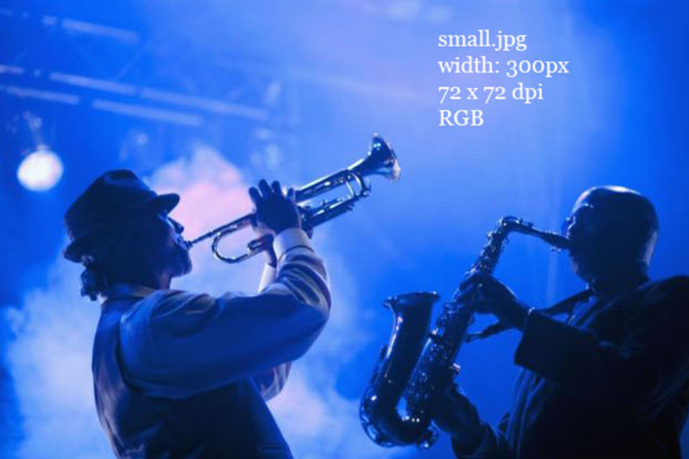

When designing the page, I've taken some influence from the iconic jazz record label Blue Note Records and their design - although I've also tried to adduce my own vision and understanding of the theme. For me personally blue note, as well as jazz, is also very much about the rather melancolic experience of feeling blue. The color blue is therefore also very symbolic.
The design process started by creating a moodboard of the theme.
The moodboard
After the moodboard

The first version of a color scheme based on the moodboard
The final version of the color scheme including the colors that are used in the final version
The chosen typography is Georgia (font-family: Georgia, Times, "Times New Roman", serif). I chose this since I find it "old school" enough - and therefore it fits well with the theme.
The html-files, css-sheet and images are located inside a folder called "RWD". The images of the website are inside a sub-folder called "images".
The content inside the main folder.
The website is coded and designed to be usable and responsive on both mobile devices and desktop screen. I chose those two options, since they are pretty much the most common ones and I'm most familiar with them myself.
The website on a mobile device (iPhone 6s).
The desktop version of the website.

Image assets